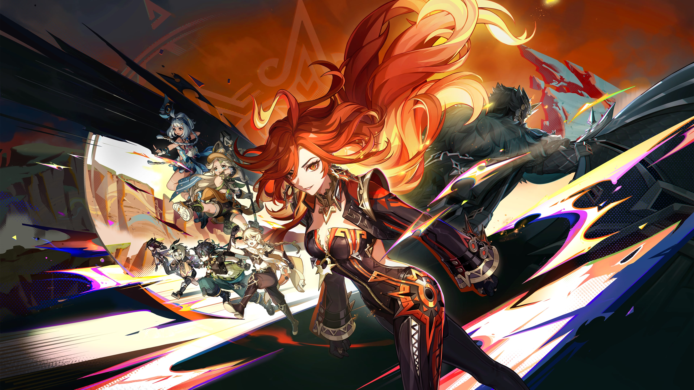

Mavuika is a playable Pyro character in Genshin Impact. Bearing the Ancient Name Kiongozi and known by her Goetic name Haborym, she is the current God of War and Pyro Archon presiding over Natlan.
When the name "Mavuika" is mentioned, the citizens of Natlan will not be stingy with their praise, for she has proven herself well-qualified and worthy of respect, be it as a leader or Archon. She is the pinnacle of strength in Natlan, and she has the bearing to match. Even newly-arrived travelers need only hear her speak at the Stadium of the Sacred Flame to know that she merits being known as the sun. She is exceedingly awe-inspiring, but is no unsmiling ruler whose ways may as well be set in stone. In informal situations, she is an enthusiastic and friendly big-sister figure, always ready to chat, and ever open to reasonable suggestions. On the eve of the Pilgrimage of the Return of the Sacred Flame, the Weary Inn is often packed with passionate revelers, and Mavuika can often be found there, playing cards or singing songs with everyone, and even if some drunk person splashes their drink onto her, she doesn't mind at all. After all, for someone who can ignite their hair to dry off said drink, such incidents are small beans. When such levity is hard to come by, why let something so minor spoil the mood? But should the person intend to start a drinking contest, it is Mavuika's desire to win that will be kindled. As the "battle" has begun, there can be no room for retreat or surrender. The victor will be determined, one way or the other. Since becoming Archon, her habits have remained utterly unchanged, and this has allowed her to make many friends across the tribes. However, not everyone possesses the subtle sense of proper propriety for such a relationship. Indeed, she can be too down-to-earth, and with her lack of airs, some misjudge the situation and get the false impression that they can use their friendship with an Archon to their own benefit. Strangely enough, though people of this sort are a dime a dozen, they have never caused any major trouble, for Mavuika has never responded to such ridiculous requests — a solemn, icy stare is all she needs to send the other party scampering away. The sight of those ever-burning eyes casting such a frigid gaze wakes those confused fools up in an instant to the fact that Mavuika is still the leader of a nation, a supreme deity. A Speaker's Chamber staff member once suggested that she should subject those who so harass her to at least token punishment, lest there be an endless stream of incidents to come, but she refused. "Archonhood is status, authority, and a spiritual symbol. But it is not who 'I' am."
Mavuika's Elemental Burst

Ancient Flame Ablaze is Mavuika's release banner in Genshin Impact 5.3. Check out Mavuika's banner dates and times, featured characters, and if Mavuika's Banner is worth pulling on! If you feel lacking a Pyro off-field or on-field DPS in your Natlan team, Mavuika is a great choice!